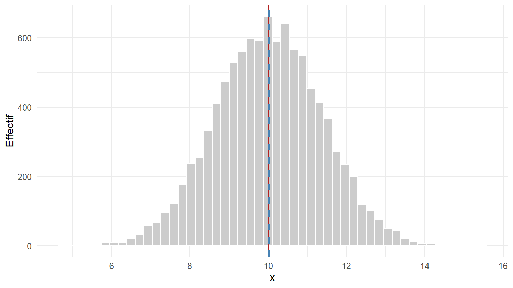
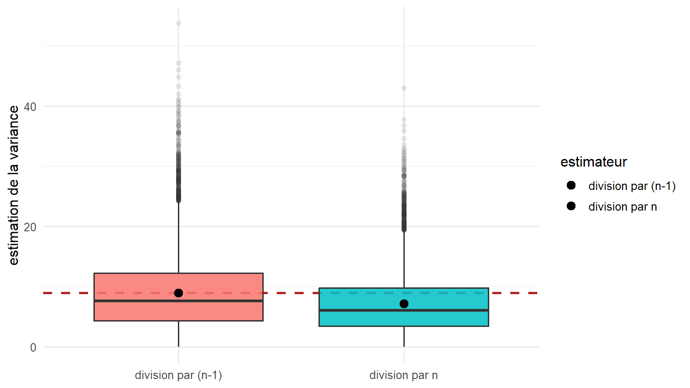
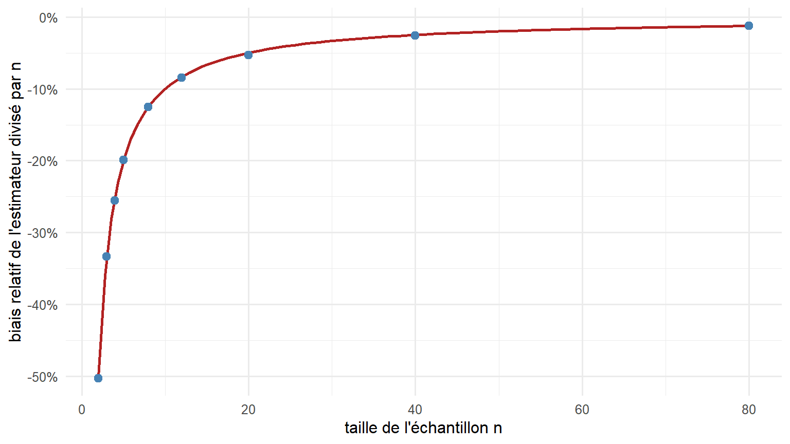

Code
moyenne des x̄ vraie mu biais estime
10.007724241 10.000000000 0.007724241 La variance d’un échantillon et la correction de degré de liberté
7 août 2026
Comprendre pourquoi la variance calculée sur un échantillon se divise par \(n-1\) et non par \(n\). Nous verrons que ce n’est pas une convention arbitraire, mais la conséquence d’une exigence précise, l’absence de biais, appliquée à un estimateur qui, sans cette correction, sous-estime la dispersion de façon systématique.
Quelques termes reviennent tout au long du chapitre. Ils sont redéfinis à leur première apparition, mais les voici rassemblés.
Un estimateur est une recette de calcul appliquée à un échantillon. Comme l’échantillon est tiré au hasard, le résultat de la recette varie d’un échantillon à l’autre : l’estimateur possède lui-même une distribution, appelée distribution d’échantillonnage (la répartition des valeurs qu’il prendrait si l’on répétait le tirage un grand nombre de fois).
Pour comparer un estimateur à la vraie valeur, on utilise son espérance, notée \(\mathbb{E}[\cdot]\). L’espérance d’une quantité aléatoire est sa moyenne théorique, c’est-à-dire la valeur moyenne que l’on obtiendrait en répétant l’expérience une infinité de fois. Le biais d’un estimateur \(\widehat\theta\) d’un paramètre \(\theta\) est alors défini par :
\[ \text{biais}(\widehat\theta) \;=\; \mathbb{E}[\widehat\theta] - \theta . \]
Un estimateur est dit non biaisé lorsque ce biais est nul, c’est-à-dire lorsque sa moyenne théorique coïncide avec le paramètre visé.
Il faut insister sur un point qui prête souvent à confusion : le biais ne se lit pas sur un échantillon isolé. Il décrit où tombe l’estimateur en moyenne, sur un grand nombre de répétitions. Un estimateur non biaisé peut se tromper nettement sur un relevé donné ; simplement, il ne se trompe pas toujours dans le même sens.
Illustrons cela avec la moyenne de l’échantillon, notée \(\bar x\) (« x barre »), qui est la somme des valeurs divisée par leur nombre. On tire ici 10 000 échantillons de taille \(n = 5\) dans une population de moyenne \(\mu = 10\) et d’écart-type \(\sigma = 3\).
moyenne des x̄ vraie mu biais estime
10.007724241 10.000000000 0.007724241 ggplot(tibble(moyennes), aes(moyennes)) +
geom_histogram(bins = 50, fill = "grey80", colour = "white") +
geom_vline(xintercept = mu, colour = "firebrick", linewidth = 1) +
geom_vline(xintercept = mean(moyennes), colour = "steelblue",
linewidth = 1, linetype = 2) +
labs(x = expression(bar(x)), y = "Effectif")
La moyenne de l’échantillon se comporte donc bien : elle vise juste, en moyenne. La variance, elle, va poser un problème.
Pour mesurer la dispersion des données, l’idée naturelle consiste à calculer, pour chaque observation, son écart à la moyenne de l’échantillon, à l’élever au carré (pour que les écarts positifs et négatifs ne se compensent pas), puis à faire la moyenne de ces carrés. La quantité centrale est la somme des carrés des écarts, que nous noterons SCE :
\[ \text{SCE} \;=\; \sum_{i=1}^{n} (x_i - \bar x)^2 , \]
où le symbole \(\sum_{i=1}^{n}\) (« somme pour \(i\) allant de 1 à \(n\) ») signifie que l’on additionne le terme \((x_i - \bar x)^2\) pour chaque observation \(x_i\) de l’échantillon.
Reste à décider par quoi diviser cette somme. Deux formules sont envisageables :
\[ \underbrace{\frac{1}{n}\,\text{SCE}}_{\text{division par } n} \qquad\text{et}\qquad \underbrace{\frac{1}{n-1}\,\text{SCE}}_{\text{division par } n-1} . \]
Comparons leur comportement en tant qu’estimateurs de la vraie variance \(\sigma^2 = 9\).
division par n : moyenne division par (n-1) : moyenne
7.204673 9.005841
vraie variance
9.000000 tibble(`division par n` = var_div_n, `division par (n-1)` = var_div_n1) |>
pivot_longer(everything(), names_to = "estimateur", values_to = "valeur") |>
ggplot(aes(estimateur, valeur, fill = estimateur)) +
geom_hline(yintercept = sigma^2, colour = "firebrick",
linewidth = 1, linetype = 2) +
geom_boxplot(alpha = 0.85, outlier.alpha = 0.1, show.legend = FALSE) +
stat_summary(fun = mean, geom = "point", size = 3, colour = "black") +
labs(x = NULL, y = "estimation de la variance")
La division par \(n\) vise trop bas, d’un facteur qui vaut ici exactement \((n-1)/n = 4/5 = 0{,}8\). Il reste à comprendre pourquoi.
L’explication de fond tient à une propriété de la moyenne. Parmi tous les points de référence possibles, la moyenne de l’échantillon \(\bar x\) est celui qui rend la somme des carrés des écarts la plus petite possible. Autrement dit, si l’on calculait \(\sum_i (x_i - a)^2\) pour n’importe quelle valeur de référence \(a\), c’est en prenant \(a = \bar x\) que cette somme serait minimale.
Conséquence directe : les écarts mesurés autour de \(\bar x\) sont plus petits que les écarts mesurés autour de la vraie moyenne de la population \(\mu\), que l’on ne connaît jamais en pratique. On a donc, pour tout échantillon :
\[ \sum_i (x_i - \bar x)^2 \;\le\; \sum_i (x_i - \mu)^2 . \]
En divisant la somme de gauche par \(n\), on mesure la dispersion autour d’un centre qui a été ajusté sur les données elles-mêmes. On sous-estime donc nécessairement la dispersion réelle. Vérifions que l’inégalité est vraie pour chaque échantillon, et mesurons l’écart moyen entre les deux sommes.
sce_xbar <- apply(ech, 2, function(x) sum((x - mean(x))^2)) # écarts autour de x̄
sce_mu <- colSums((ech - mu)^2) # écarts autour du vrai centre mu
c(`part des echantillons ou SCE(x-barre) <= SCE(mu)` = mean(sce_xbar <= sce_mu),
`SCE autour de x-barre : moyenne` = mean(sce_xbar), # proche de (n-1) sigma^2 = 4 x 9 = 36
`SCE autour de mu : moyenne` = mean(sce_mu), # proche de n sigma^2 = 5 x 9 = 45
`ecart moyen` = mean(sce_mu - sce_xbar)) # proche de sigma^2 = 9part des echantillons ou SCE(x-barre) <= SCE(mu)
1.000000
SCE autour de x-barre : moyenne
36.023365
SCE autour de mu : moyenne
45.269846
ecart moyen
9.246481 L’inégalité est vérifiée pour la totalité des échantillons, et l’écart moyen entre les deux sommes vaut \(\sigma^2\). Cet écart représente le « coût » d’avoir dû localiser le centre à partir des données. On a estimé un premier paramètre, la moyenne, avant d’estimer la dispersion, et cela consomme l’équivalent d’une observation.
La même idée peut se formuler par un décompte. Considérons les \(n\) écarts à la moyenne de l’échantillon, notés \(d_i = x_i - \bar x\). Par construction même de la moyenne, leur somme est nulle :
\[ \sum_i d_i = \sum_i (x_i - \bar x) = 0 . \]
Cette relation est une contrainte : elle lie les écarts entre eux. Connaissant \(n-1\) d’entre eux, on peut retrouver le dernier, puisque leur total doit faire zéro. Il n’y a donc que \(n-1\) écarts réellement libres de varier. On appelle degré de liberté le nombre de quantités indépendantes porteuses d’information, une fois retranchées les contraintes issues des paramètres déjà estimés. Ici, ce nombre est \(n-1\), et c’est par lui qu’il faut diviser pour obtenir une moyenne des carrés correctement calibrée.
Avec une seule observation, la moyenne de l’échantillon est cette observation elle-même : \(\bar x = x_1\). La somme des carrés des écarts vaut alors zéro, et \(n - 1 = 0\). La variance divisée par \(n-1\) est donc indéterminée (division de zéro par zéro). C’est la réponse correcte : une seule mesure ne dit rien de la dispersion. La division par \(n\) donnerait au contraire \(0/1 = 0\), c’est-à-dire une variance nulle affirmée à partir d’un unique point. La correction par \(n-1\) traduit honnêtement l’absence d’information.
Les deux explications précédentes peuvent se démontrer directement en calculant l’espérance de la somme des carrés des écarts. On introduit ici la variance d’un estimateur, notée \(\operatorname{Var}(\cdot)\) : c’est la variance de sa distribution d’échantillonnage, autrement dit une mesure de sa dispersion d’un échantillon à l’autre.
On part d’une identité algébrique, obtenue en développant les carrés puis en regroupant les termes : \[ \sum_i (X_i - \bar X)^2 \;=\; \sum_i (X_i - \mu)^2 \;-\; n\,(\bar X - \mu)^2 . \] On prend ensuite l’espérance (la moyenne théorique) de chaque membre. Deux résultats connus sont utilisés :
On obtient alors : \[ \mathbb{E}\!\left[\sum_i (X_i - \bar X)^2\right] = n\,\sigma^2 \;-\; n\cdot\frac{\sigma^2}{n} = (n-1)\,\sigma^2 . \] L’espérance de la somme des carrés des écarts vaut donc \((n-1)\sigma^2\). En la divisant par \(n-1\), et non par \(n\), on obtient un estimateur dont l’espérance est exactement \(\sigma^2\), c’est-à-dire un estimateur non biaisé.
Les deux explications intuitives se lisent dans cette démonstration. Le terme retranché \(n(\bar X - \mu)^2\) correspond à l’écart entre la dispersion autour de \(\bar X\) et la dispersion autour de \(\mu\), c’est la section 3.1. Et le passage de \(n\sigma^2\) à \((n-1)\sigma^2\) correspond au degré de liberté consommé par l’estimation de la moyenne, c’est la section 3.2.
Le facteur d’erreur de la division par \(n\) est \((n-1)/n\), ce qui correspond à un biais relatif de \(-1/n\). Ce biais est important pour les petits échantillons, situation fréquente sur des données de terrain, et devient négligeable pour les grands.
tibble(n = tailles, biais = biais) |>
ggplot(aes(n, biais)) +
stat_function(fun = function(n) -1 / n, colour = "firebrick", linewidth = 1) +
geom_point(size = 2.5, colour = "steelblue") +
scale_y_continuous(labels = scales::percent) +
labs(x = "taille de l'échantillon n", y = "biais relatif de l'estimateur divisé par n")
La division par \(n-1\) rend la variance non biaisée. Elle ne rend pas pour autant l’écart-type non biaisé. L’écart-type de l’échantillon, noté \(s\), est la racine carrée de la variance de l’échantillon. Or la racine carrée est une opération qui « courbe » les valeurs : la moyenne d’une racine carrée n’est pas égale à la racine carrée de la moyenne. En conséquence, \(s\) sous-estime \(\sigma\) en moyenne.
Il existe un facteur de correction exact, noté \(c_4\), valable lorsque les données suivent une loi normale, qui rétablirait l’absence de biais de l’écart-type. Vérifions l’ampleur de la sous-estimation.
# on réutilise les échantillons de taille n = 5 de la section 2
s <- sqrt(var_div_n1) # écart-type de l'échantillon
c4 <- sqrt(2 / (n - 1)) * gamma(n / 2) / gamma((n - 1) / 2) # facteur de correction (loi normale)
c(`moyenne de s` = mean(s),
`prediction c4 x sigma` = c4 * sigma,
`vrai sigma` = sigma,
`biais relatif de s` = mean(s) / sigma - 1) # proche de -6 pour cent à n = 5 moyenne de s prediction c4 x sigma vrai sigma
2.82051939 2.81995681 3.00000000
biais relatif de s
-0.05982687 À \(n = 5\), l’écart-type de l’échantillon sous-estime encore \(\sigma\) d’environ 6 pour cent. Ce facteur de correction n’est presque jamais appliqué en pratique, ce qui constitue un enseignement en soi : on ne cherche pas à supprimer le biais à tout prix.
Pour juger la qualité globale d’un estimateur, un seul critère est insuffisant. On utilise l’erreur quadratique moyenne, notée EQM : c’est la moyenne du carré de l’écart entre l’estimateur et la vraie valeur. Elle se décompose en deux parties :
\[ \text{EQM}(\widehat\theta) = \mathbb{E}\big[(\widehat\theta - \theta)^2\big] = \underbrace{\operatorname{Var}(\widehat\theta)}_{\text{dispersion de l'estimateur}} + \underbrace{\big(\text{biais}(\widehat\theta)\big)^2}_{\text{décalage systématique}} . \]
Un estimateur légèrement biaisé mais moins dispersé peut donc avoir une erreur quadratique moyenne plus faible qu’un estimateur non biaisé. Comparons trois diviseurs de la somme des carrés des écarts pour estimer \(\sigma^2\).
divise par (n-1) divise par n divise par (n+1)
40.15611 28.92309 26.82379 Lorsque les données suivent une loi normale, c’est la division par \(n+1\) qui minimise l’erreur quadratique moyenne, et non la division par \(n-1\). Chaque diviseur optimise donc un critère différent :
var() de R ;Aucun de ces trois choix n’est correct dans l’absolu. La division par \(n-1\) est le prix de l’absence de biais, ni plus, ni moins.
Le même principe, un degré de liberté retranché par paramètre estimé, explique la division par \(n - p\) en régression, où \(p\) est le nombre de paramètres du modèle, ainsi que le paramètre qui caractérise la loi de Student. Ces prolongements peuvent faire l’objet d’un chapitre distinct.
---
title: "Estimateur biaisé ou non biaisé : pourquoi diviser par $n-1$"
subtitle: "La variance d'un échantillon et la correction de degré de liberté"
lang: fr
date: today
format:
# pdf: default
html:
toc: true
toc-title: "Sommaire"
number-sections: true
code-fold: show
code-tools: true
code-link: true
theme: cosmo
fig-width: 8
fig-height: 4.5
df-print: kable
execute:
warning: false
message: false
knitr:
opts_chunk:
dev: "png"
fig.align: "center"
---
```{r}
#| label: setup
#| include: false
library(ggplot2)
library(dplyr)
library(tidyr)
theme_set(theme_minimal(base_size = 12))
set.seed(2026)
mu <- 10 # moyenne "vraie" de la population
sigma <- 3 # écart-type "vrai" (donc variance vraie = 9)
```
::: {.callout-note}
## Objectif du chapitre
Comprendre pourquoi la variance calculée sur un échantillon se divise par $n-1$ et non par $n$. Nous verrons que ce n'est pas une convention arbitraire, mais la conséquence d'une exigence précise, l'absence de biais, appliquée à un estimateur qui, sans cette correction, sous-estime la dispersion de façon systématique.
:::
::: {.callout-tip}
## Vocabulaire de départ
Quelques termes reviennent tout au long du chapitre. Ils sont redéfinis à leur première apparition, mais les voici rassemblés.
- **Population** : l'ensemble complet des individus que l'on étudie (par exemple tous les individus d'une espèce sur un site). On ne l'observe jamais en entier.
- **Échantillon** : le sous-ensemble effectivement mesuré. Sa taille est notée $n$.
- **Paramètre** : une caractéristique de la population, fixe mais inconnue. La moyenne de la population se note $\mu$ (lettre grecque « mu »), sa variance $\sigma^2$ (« sigma carré »), son écart-type $\sigma$.
- **Variance** : la moyenne des écarts au carré entre les valeurs et leur moyenne. Elle mesure la dispersion. L'**écart-type** est sa racine carrée, exprimé dans la même unité que les données.
- **Estimateur** : une formule de calcul appliquée à l'échantillon pour approcher un paramètre inconnu.
:::
# Ce que signifie « biaisé »
Un estimateur est une **recette de calcul** appliquée à un échantillon. Comme l'échantillon est tiré au hasard, le résultat de la recette varie d'un échantillon à l'autre : l'estimateur possède lui-même une distribution, appelée **distribution d'échantillonnage** (la répartition des valeurs qu'il prendrait si l'on répétait le tirage un grand nombre de fois).
Pour comparer un estimateur à la vraie valeur, on utilise son **espérance**, notée $\mathbb{E}[\cdot]$. L'espérance d'une quantité aléatoire est sa **moyenne théorique**, c'est-à-dire la valeur moyenne que l'on obtiendrait en répétant l'expérience une infinité de fois. Le **biais** d'un estimateur $\widehat\theta$ d'un paramètre $\theta$ est alors défini par :
$$
\text{biais}(\widehat\theta) \;=\; \mathbb{E}[\widehat\theta] - \theta .
$$
Un estimateur est dit **non biaisé** lorsque ce biais est nul, c'est-à-dire lorsque sa moyenne théorique coïncide avec le paramètre visé.
Il faut insister sur un point qui prête souvent à confusion : le biais ne se lit pas sur un échantillon isolé. Il décrit où tombe l'estimateur **en moyenne, sur un grand nombre de répétitions**. Un estimateur non biaisé peut se tromper nettement sur un relevé donné ; simplement, il ne se trompe pas toujours dans le même sens.
Illustrons cela avec la moyenne de l'échantillon, notée $\bar x$ (« x barre »), qui est la somme des valeurs divisée par leur nombre. On tire ici 10 000 échantillons de taille $n = 5$ dans une population de moyenne $\mu = 10$ et d'écart-type $\sigma = 3$.
```{r}
#| label: moyenne-non-biaisee
n <- 5
n_rep <- 10000
ech <- matrix(rnorm(n * n_rep, mu, sigma), nrow = n) # une colonne = un échantillon
moyennes <- colMeans(ech) # la moyenne x̄ de chaque échantillon
c(`moyenne des x̄` = mean(moyennes),
`vraie mu` = mu,
`biais estime` = mean(moyennes) - mu)
```
```{r}
#| label: fig-moyenne
#| fig-cap: "Distribution d'échantillonnage de la moyenne sur 10 000 échantillons de taille 5. Le centre de la distribution (trait bleu) coïncide avec la vraie moyenne de la population (trait rouge) : la moyenne de l'échantillon est un estimateur non biaisé."
ggplot(tibble(moyennes), aes(moyennes)) +
geom_histogram(bins = 50, fill = "grey80", colour = "white") +
geom_vline(xintercept = mu, colour = "firebrick", linewidth = 1) +
geom_vline(xintercept = mean(moyennes), colour = "steelblue",
linewidth = 1, linetype = 2) +
labs(x = expression(bar(x)), y = "Effectif")
```
La moyenne de l'échantillon se comporte donc bien : elle vise juste, en moyenne. La variance, elle, va poser un problème.
# Deux formules candidates pour la variance
Pour mesurer la dispersion des données, l'idée naturelle consiste à calculer, pour chaque observation, son **écart** à la moyenne de l'échantillon, à l'élever au carré (pour que les écarts positifs et négatifs ne se compensent pas), puis à faire la moyenne de ces carrés. La quantité centrale est la **somme des carrés des écarts**, que nous noterons SCE :
$$
\text{SCE} \;=\; \sum_{i=1}^{n} (x_i - \bar x)^2 ,
$$
où le symbole $\sum_{i=1}^{n}$ (« somme pour $i$ allant de 1 à $n$ ») signifie que l'on additionne le terme $(x_i - \bar x)^2$ pour chaque observation $x_i$ de l'échantillon.
Reste à décider par quoi diviser cette somme. Deux formules sont envisageables :
$$
\underbrace{\frac{1}{n}\,\text{SCE}}_{\text{division par } n}
\qquad\text{et}\qquad
\underbrace{\frac{1}{n-1}\,\text{SCE}}_{\text{division par } n-1} .
$$
Comparons leur comportement en tant qu'estimateurs de la vraie variance $\sigma^2 = 9$.
```{r}
#| label: deux-variances
var_div_n <- apply(ech, 2, function(x) mean((x - mean(x))^2)) # division par n
var_div_n1 <- apply(ech, 2, var) # division par (n-1) : c'est var() de R
c(`division par n : moyenne` = mean(var_div_n),
`division par (n-1) : moyenne` = mean(var_div_n1),
`vraie variance` = sigma^2)
```
```{r}
#| label: fig-deux-variances
#| fig-cap: "Sur 10 000 échantillons de taille 5, l'estimateur divisé par n tombe en moyenne sous la vraie variance (trait rouge), alors que l'estimateur divisé par (n-1) tombe dessus. Le point noir marque la moyenne de chaque distribution."
tibble(`division par n` = var_div_n, `division par (n-1)` = var_div_n1) |>
pivot_longer(everything(), names_to = "estimateur", values_to = "valeur") |>
ggplot(aes(estimateur, valeur, fill = estimateur)) +
geom_hline(yintercept = sigma^2, colour = "firebrick",
linewidth = 1, linetype = 2) +
geom_boxplot(alpha = 0.85, outlier.alpha = 0.1, show.legend = FALSE) +
stat_summary(fun = mean, geom = "point", size = 3, colour = "black") +
labs(x = NULL, y = "estimation de la variance")
```
La division par $n$ vise trop bas, d'un facteur qui vaut ici exactement $(n-1)/n = 4/5 = 0{,}8$. Il reste à comprendre pourquoi.
# Trois explications qui aboutissent au même $n-1$
## La moyenne de l'échantillon est au plus près des données {#sec-colle}
L'explication de fond tient à une propriété de la moyenne. Parmi tous les points de référence possibles, la moyenne de l'échantillon $\bar x$ est celui qui rend la somme des carrés des écarts **la plus petite possible**. Autrement dit, si l'on calculait $\sum_i (x_i - a)^2$ pour n'importe quelle valeur de référence $a$, c'est en prenant $a = \bar x$ que cette somme serait minimale.
Conséquence directe : les écarts mesurés autour de $\bar x$ sont **plus petits** que les écarts mesurés autour de la vraie moyenne de la population $\mu$, que l'on ne connaît jamais en pratique. On a donc, pour tout échantillon :
$$
\sum_i (x_i - \bar x)^2 \;\le\; \sum_i (x_i - \mu)^2 .
$$
En divisant la somme de gauche par $n$, on mesure la dispersion autour d'un centre qui a été **ajusté sur les données elles-mêmes**. On sous-estime donc nécessairement la dispersion réelle. Vérifions que l'inégalité est vraie pour chaque échantillon, et mesurons l'écart moyen entre les deux sommes.
```{r}
#| label: colle
sce_xbar <- apply(ech, 2, function(x) sum((x - mean(x))^2)) # écarts autour de x̄
sce_mu <- colSums((ech - mu)^2) # écarts autour du vrai centre mu
c(`part des echantillons ou SCE(x-barre) <= SCE(mu)` = mean(sce_xbar <= sce_mu),
`SCE autour de x-barre : moyenne` = mean(sce_xbar), # proche de (n-1) sigma^2 = 4 x 9 = 36
`SCE autour de mu : moyenne` = mean(sce_mu), # proche de n sigma^2 = 5 x 9 = 45
`ecart moyen` = mean(sce_mu - sce_xbar)) # proche de sigma^2 = 9
```
L'inégalité est vérifiée pour la totalité des échantillons, et l'écart moyen entre les deux sommes vaut $\sigma^2$. Cet écart représente le « coût » d'avoir dû localiser le centre à partir des données. On a estimé un premier paramètre, la moyenne, avant d'estimer la dispersion, et cela consomme l'équivalent d'une observation.
## Le compte des degrés de liberté {#sec-ddl}
La même idée peut se formuler par un décompte. Considérons les $n$ écarts à la moyenne de l'échantillon, notés $d_i = x_i - \bar x$. Par construction même de la moyenne, leur somme est nulle :
$$
\sum_i d_i = \sum_i (x_i - \bar x) = 0 .
$$
Cette relation est une **contrainte** : elle lie les écarts entre eux. Connaissant $n-1$ d'entre eux, on peut retrouver le dernier, puisque leur total doit faire zéro. Il n'y a donc que $n-1$ écarts réellement **libres de varier**. On appelle **degré de liberté** le nombre de quantités indépendantes porteuses d'information, une fois retranchées les contraintes issues des paramètres déjà estimés. Ici, ce nombre est $n-1$, et c'est par lui qu'il faut diviser pour obtenir une moyenne des carrés correctement calibrée.
::: {.callout-tip collapse="true"}
## Un test de cohérence avec un seul point ($n = 1$)
Avec une seule observation, la moyenne de l'échantillon est cette observation elle-même : $\bar x = x_1$. La somme des carrés des écarts vaut alors zéro, et $n - 1 = 0$. La variance divisée par $n-1$ est donc indéterminée (division de zéro par zéro). C'est la réponse correcte : une seule mesure ne dit rien de la dispersion. La division par $n$ donnerait au contraire $0/1 = 0$, c'est-à-dire une variance nulle affirmée à partir d'un unique point. La correction par $n-1$ traduit honnêtement l'absence d'information.
:::
## Le calcul de l'espérance de la SCE {#sec-calcul}
Les deux explications précédentes peuvent se démontrer directement en calculant l'espérance de la somme des carrés des écarts. On introduit ici la **variance d'un estimateur**, notée $\operatorname{Var}(\cdot)$ : c'est la variance de sa distribution d'échantillonnage, autrement dit une mesure de sa dispersion d'un échantillon à l'autre.
::: {.callout-note collapse="true"}
## Démonstration détaillée
On part d'une identité algébrique, obtenue en développant les carrés puis en regroupant les termes :
$$
\sum_i (X_i - \bar X)^2 \;=\; \sum_i (X_i - \mu)^2 \;-\; n\,(\bar X - \mu)^2 .
$$
On prend ensuite l'espérance (la moyenne théorique) de chaque membre. Deux résultats connus sont utilisés :
1. $\mathbb{E}\big[(X_i - \mu)^2\big] = \sigma^2$ : c'est la définition même de la variance de la population.
2. $\mathbb{E}\big[(\bar X - \mu)^2\big] = \operatorname{Var}(\bar X) = \dfrac{\sigma^2}{n}$ : la moyenne de $n$ observations est $n$ fois moins dispersée que les observations individuelles.
On obtient alors :
$$
\mathbb{E}\!\left[\sum_i (X_i - \bar X)^2\right]
= n\,\sigma^2 \;-\; n\cdot\frac{\sigma^2}{n}
= (n-1)\,\sigma^2 .
$$
L'espérance de la somme des carrés des écarts vaut donc $(n-1)\sigma^2$. En la divisant par $n-1$, et non par $n$, on obtient un estimateur dont l'espérance est exactement $\sigma^2$, c'est-à-dire un estimateur non biaisé.
:::
Les deux explications intuitives se lisent dans cette démonstration. Le terme retranché $n(\bar X - \mu)^2$ correspond à l'écart entre la dispersion autour de $\bar X$ et la dispersion autour de $\mu$, c'est la section 3.1. Et le passage de $n\sigma^2$ à $(n-1)\sigma^2$ correspond au degré de liberté consommé par l'estimation de la moyenne, c'est la section 3.2.
# La correction disparaît quand l'échantillon grandit
Le facteur d'erreur de la division par $n$ est $(n-1)/n$, ce qui correspond à un biais relatif de $-1/n$. Ce biais est important pour les petits échantillons, situation fréquente sur des données de terrain, et devient négligeable pour les grands.
```{r}
#| label: biais-selon-n
tailles <- c(2, 3, 4, 5, 8, 12, 20, 40, 80)
biais <- sapply(tailles, function(nn) {
e <- matrix(rnorm(nn * n_rep, mu, sigma), nrow = nn)
vn <- apply(e, 2, function(x) mean((x - mean(x))^2)) # estimateur divisé par n
mean(vn) / sigma^2 - 1 # biais relatif
})
```
```{r}
#| label: fig-biais
#| fig-cap: "Biais relatif de l'estimateur divisé par n, en fonction de la taille de l'échantillon. Les points proviennent de la simulation, la courbe rouge est la prédiction théorique en -1/n. À n = 5, le biais atteint -20 pour cent ; à n = 80, il descend sous -2 pour cent."
tibble(n = tailles, biais = biais) |>
ggplot(aes(n, biais)) +
stat_function(fun = function(n) -1 / n, colour = "firebrick", linewidth = 1) +
geom_point(size = 2.5, colour = "steelblue") +
scale_y_continuous(labels = scales::percent) +
labs(x = "taille de l'échantillon n", y = "biais relatif de l'estimateur divisé par n")
```
# Deux nuances importantes
## La correction ne rend pas l'écart-type non biaisé {#sec-ecart-type}
La division par $n-1$ rend la **variance** non biaisée. Elle ne rend pas pour autant l'**écart-type** non biaisé. L'écart-type de l'échantillon, noté $s$, est la racine carrée de la variance de l'échantillon. Or la racine carrée est une opération qui « courbe » les valeurs : la moyenne d'une racine carrée n'est pas égale à la racine carrée de la moyenne. En conséquence, $s$ sous-estime $\sigma$ en moyenne.
Il existe un facteur de correction exact, noté $c_4$, valable lorsque les données suivent une loi normale, qui rétablirait l'absence de biais de l'écart-type. Vérifions l'ampleur de la sous-estimation.
```{r}
#| label: ecart-type-biaise
# on réutilise les échantillons de taille n = 5 de la section 2
s <- sqrt(var_div_n1) # écart-type de l'échantillon
c4 <- sqrt(2 / (n - 1)) * gamma(n / 2) / gamma((n - 1) / 2) # facteur de correction (loi normale)
c(`moyenne de s` = mean(s),
`prediction c4 x sigma` = c4 * sigma,
`vrai sigma` = sigma,
`biais relatif de s` = mean(s) / sigma - 1) # proche de -6 pour cent à n = 5
```
À $n = 5$, l'écart-type de l'échantillon sous-estime encore $\sigma$ d'environ 6 pour cent. Ce facteur de correction n'est presque jamais appliqué en pratique, ce qui constitue un enseignement en soi : on ne cherche pas à supprimer le biais à tout prix.
## Non biaisé ne veut pas dire meilleur {#sec-eqm}
Pour juger la qualité globale d'un estimateur, un seul critère est insuffisant. On utilise l'**erreur quadratique moyenne**, notée EQM : c'est la moyenne du carré de l'écart entre l'estimateur et la vraie valeur. Elle se décompose en deux parties :
$$
\text{EQM}(\widehat\theta) = \mathbb{E}\big[(\widehat\theta - \theta)^2\big]
= \underbrace{\operatorname{Var}(\widehat\theta)}_{\text{dispersion de l'estimateur}}
+ \underbrace{\big(\text{biais}(\widehat\theta)\big)^2}_{\text{décalage systématique}} .
$$
Un estimateur légèrement biaisé mais moins dispersé peut donc avoir une erreur quadratique moyenne plus faible qu'un estimateur non biaisé. Comparons trois diviseurs de la somme des carrés des écarts pour estimer $\sigma^2$.
```{r}
#| label: eqm
sce <- apply(ech, 2, function(x) sum((x - mean(x))^2)) # échantillons de taille n = 5
eqm <- function(diviseur) mean((sce / diviseur - sigma^2)^2)
sapply(c(`divise par (n-1)` = n - 1,
`divise par n` = n,
`divise par (n+1)` = n + 1), eqm)
```
Lorsque les données suivent une loi normale, c'est la division par $n+1$ qui minimise l'erreur quadratique moyenne, et non la division par $n-1$. Chaque diviseur optimise donc un critère différent :
- la division par $n-1$ donne le seul estimateur **sans biais**, c'est la convention adoptée par la fonction `var()` de R ;
- la division par $n+1$ donne l'estimateur le plus **précis** au sens de l'erreur quadratique moyenne ;
- la division par $n$ donne l'estimateur du **maximum de vraisemblance**, c'est-à-dire celui qui rend les données observées les plus probables.
Aucun de ces trois choix n'est correct dans l'absolu. La division par $n-1$ est le prix de l'absence de biais, ni plus, ni moins.
# À retenir
- Le biais est une propriété de la **procédure de calcul**, évaluée sur un grand nombre d'échantillons répétés. Il ne se lit pas sur un relevé isolé.
- La variance divisée par $n$ sous-estime la dispersion, parce qu'elle mesure les écarts autour de la moyenne de l'échantillon, un centre ajusté sur les données (section 3.1). Cela consomme un degré de liberté (section 3.2), ce qui se démontre par le calcul $\mathbb{E}[\text{SCE}] = (n-1)\sigma^2$ (section 3.3).
- Le biais de la division par $n$ vaut $-1/n$ : notable pour les petits échantillons, négligeable pour les grands.
- La correction par $n-1$ ne rend pas l'écart-type non biaisé, et ne minimise pas l'erreur quadratique moyenne. L'absence de biais est un critère parmi d'autres, pas un absolu.
::: {.callout-note appearance="minimal"}
Le même principe, un degré de liberté retranché par paramètre estimé, explique la division par $n - p$ en régression, où $p$ est le nombre de paramètres du modèle, ainsi que le paramètre qui caractérise la loi de Student. Ces prolongements peuvent faire l'objet d'un chapitre distinct.
:::